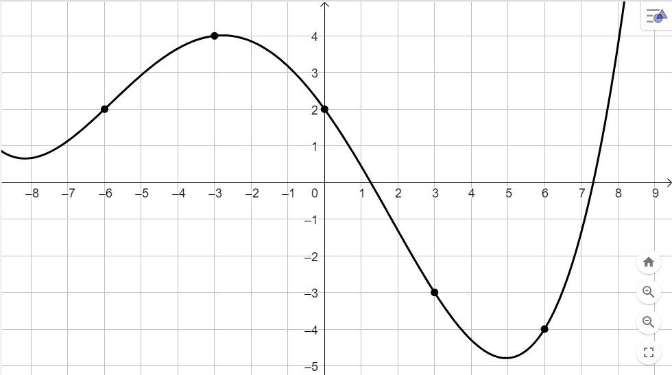

In figura è rappresentato il grafico della funzione \(y = f(x)\).

Rappresentare il grafico delle seguenti funzioni aiutandosi attraverso i punti messi in evidenza
nel grafico.
-
\(
g:\quad y = \dfrac{f(x)}{2}
\)
-
\(
h:\quad y = f(3x)
\)
-
\(
p:\quad y = f\left(\left|x\right|\right)
\)
-
\(
s:\quad y = -f(x)
\)
Data la funzione
\[
f:\quad y = 2^{-\frac{6}{5x + 20}}\,\,\sqrt{-2x - 6}
\]
individuarne il dominio e studiarne il segno.
Soluzione:
Il dominio di \(f\) è l'insieme
\[
D = \left(-\infty\,,\,\,-4\right) \cup (-4\,,\,\,-3]
\]
Si ha che
-
\(f(x) \gt 0\,\,\) se \(\,\,x \in D - {-3}\)
-
\(f(x) = 0\,\,\) se \(\,\,x \in {-3}\)
In altre parole la funzione è positiva in tutto il suo dominio eccetto che per \(x = -3\).